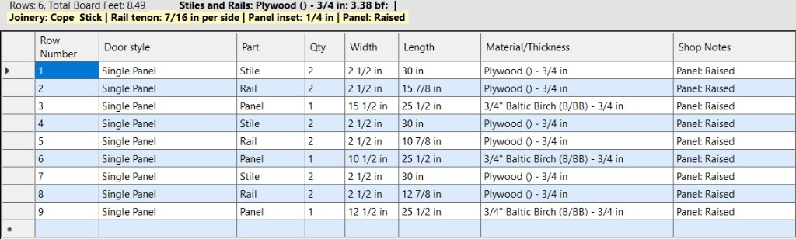

Every row is one part — its name, how many you need, and its finished sizes. Think of it as the parts list you would hand the shop.
Clear Grid wipes every row so you can start over — and unlocks the global settings described in Overview help. Save Job writes the whole list and most of your settings to a file; Load Job opens it back up later.

The strip across the bottom of the door and joinery area (just above the grid) keeps a running tally — board-foot totals and a quick rundown of how much of each material the current list uses.